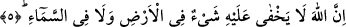
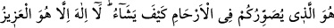
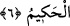

bu durumun ayrıca sarâhaten bildirilmesi, açıklamanın tam olması içindir.
Âyette geçen “İnsanlara yol gösterici olarak” cümlesi, bu kitapların indiriliş
sebebini açıklamak içindir. Yani Cenâb-ı Hak bu kitapları, insanlar doğru yolu
bulsunlar, diye indirmiştir. Bu ifadede açıklama bir derecede yapılmış ve onunla
yetinilmiştir. Çünkü yanlış anlamaya meydan verecek bir durum yoktur. Tevrat insanlara
Mûsâ (a.s.) zamanında, İncil de Îsâ (a.s.) zamanında hidâyet rehberi olmuştur. Bu
sebeple söz ihtisâr edilip kısaltılmıştır.
“Bir de O Furkan’ı indirdi.” Furkan kelimesi semâvî kitapların cinsini belirten bir
kelime olup bütün semâvî kitaplar furkan özelliğine sahiptir ve Hak ile bâtılı
birbirinden ayırır. Ayrıca “Furkan”dan kasdedilen şey, Kur’ân’dır. Cenâb-ı Hak
Kur’ân’ın şânını yüceltmek ve üstünlüğünü açıkça ortaya koymak için bu lafzı zikretmiş
oluyor.
“Allah’ın âyetlerini”, yani Kur’ân ve Peygamber’in mûcizelerini “inkâr edenler için
pek çetin bir azap vardır.” Bunun miktarı takdir edilemez. “Allah Aziz’dir.” Yani kimse
O’nu mağlûb edemez. O, dilediğini yapar, dilediğine hükmeder ve “intikam sahibidir.”
Büyüktür, hiçbir intikamcı O’nun gibi intikam alamaz.
5. Şüphesiz ki ne yerde ne de gökte hiçbir şey Allah’a gizli kalmaz.
O, istisnâsız her şeyi görmektedir. Kendini inkâr edenin inkârını bilir, îman edenin
îmanından haberdardır. Herkesin amellerini bilir, kıyâmet gününde her birinin
karşılığını verecektir.
6. Rahimlerde sizi dilediği gibi şekillendiren O’dur. O’ndan başka ilah yoktur. O
mutlak güç ve hikmet sahibidir.
Sizi annelerinizin rahimlerinde erkek-dişi, siyah-beyaz, tam-noksan, uzun-kısa, güzel-
çirkin olarak yaratan, şekillendiren O’dur. Bu âyet-i celîle, Îsâ’ya Allah veya Allah’ın
oğlu diyenlere bir reddiyedir. Çünkü rahimde yaratılan bir kimsenin ilah veya ilah
çocuğu olması mümkün değildir. Çünkü değişik cüzlerden terkîb olunmuştur ve terkîb
olunmaktadır. Mürekkeb varlık, cüzleri gibi fenâ ve zevâle mahkûmdur.
“O’ndan başka ilah yoktur.”